4 Настройка АК-ШУМКАР¶
4.1 Требования к установке¶
4.1.1 АК-ШУМКАР 6500/5400¶
АК-ШУМКАР 5400 и АК-ШУМКАР 6500 монтируются на 19-дюймовую раму и требуют двух стоек (RU). В комплект входят стоечные держатели для установки на 19-дюймовую стойку.
Для подключения приборов АК-ШУМКАР 5400 и АК-ШУМКАР 6500 имеют соответствующие разъемы спереди и сзади:
- Передний
1 консольный порт RJ45, прилагается соответствующий кабель
1 консольный порт Mini-USB
2 порта USB 3.0
2 порта Ethernet RJ45 с маркировкой «MGMT» для управления
1 модуль с 8 портами Ethernet RJ45
Примечание
Дополнительные сетевые модули необходимо приобретать отдельно. Всего можно установить максимум 4 сетевых модуля. Сетевые модули могут поддерживать до 8 портов RJ45, 8 SFP или 2 портов SFP+ Ethernet.
- Назад
1 порт VGA
1 порт USB 2.0
2 источник питания
Для установки требуется либо монитор и клавиатура, либо последовательное подключение консоли и терминальное приложение.
4.1.2 АК-ШУМКАР 650/600/450/400¶
АК-ШУМКАР 400, АК-ШУМКАР 450, АК-ШУМКАР 600 и АК-ШУМКАР 650 монтируются на 19-дюймовую раму и требуют одной стойки (RU). В комплект входят стоечные держатели для установки на 19-дюймовую стойку.
Для подключения приборов АК-ШУМКАР 400, АК-ШУМКАР 450, АК-ШУМКАР 600 и АК-ШУМКАР 650 имеют соответствующие разъемы спереди и сзади:
- Передний
1 консольный порт RJ45, прилагается соответствующий кабель
2 порта USB 3.0
8 портов Ethernet RJ45
2 порта Ethernet SFP
- Назад
1 порт VGA
1 источник питания
Для установки требуется либо монитор и клавиатура, либо последовательное подключение консоли и терминальное приложение.
4.1.3 АК-ШУМКАР 150¶
АК-ШУМКАР 150 монтируется на 19-дюймовую раму и требует одной стойки (RU). Дополнительный комплект RACKMOUNT150 включает в себя держатели для установки устройства в 19-дюймовую стойку.
Для автономных приборов на соответствующие нижние боковые выступы необходимо установить четыре самоклеящиеся резиновые прокладки.
Для подключения прибора АК-ШУМКАР 150 имеются соответствующие разъемы спереди и сзади:
- Передний
1 консольный порт RJ45, прилагается соответствующий кабель
2 порта USB 3.0
8 портов Ethernet RJ45
2 порта Ethernet SFP
- Назад
1 порт VGA
1 источник питания
Для установки требуется либо монитор и клавиатура, либо последовательное подключение консоли и терминальное приложение.
4.1.4 АК-ШУМКАР 35¶
АК-ШУМКАР 35 монтируется на 19-дюймовую раму и требует одной стойки (RU). Дополнительный комплект RACKMOUNT35 включает держатели для установки устройства в 19-дюймовую стойку.
Для автономных приборов на соответствующие нижние боковые выступы необходимо установить четыре самоклеящиеся резиновые прокладки.
Для подключения прибора АК-ШУМКАР 35 имеются соответствующие разъемы спереди и сзади:
- Передний
1 консольный порт RJ45, прилагается соответствующий кабель
2 порта USB 3.0
1 порт HDMI
4 порта Ethernet RJ45
- Назад
1 источник питания
Для установки требуется либо монитор и клавиатура, либо последовательное подключение консоли и терминальное приложение.
4.1.5 АК-ШУМКАР ДЕКА/ТЕРА/ПЕТА/ЭКСА¶
В этом разделе перечислены требования для получения выгоды от развертывания АК-ШУМКАР ДЕКА, АК-ШУМКАР ТЕРА, АК-ШУМКАР ПЕТА или АК-ШУМКАР ЕХА. Все требования должны быть соблюдены.
Виртуальным устройствам требуются и ограничены следующие ресурсы:
АК-ШУМКАР ДЕКА
4-х мировой процессор
14 ГБ ОЗУ
Виртуальный жесткий диск емкостью 500 ГБ
АК-ШУМКАР ТЕРА
6 виртуальных процессоров
14 ГБ ОЗУ
Виртуальный жесткий диск емкостью 500 ГБ
АК-ШУМКАР ПЕТА
8 виртуальных процессоров
16 ГБ ОЗУ
Виртуальный жесткий диск емкостью 500 ГБ
АК-ШУМКАР ЭКСА
12 виртуальных процессоров
24 ГБ ОЗУ
Виртуальный жесткий диск емкостью 500 ГБ
Официально для работы АК-ШУМКАР DECA/TERA/PETA/EXA используются следующие гипервизоры:
Microsoft Hyper-V: Server 2016 (виртуальная машина поколения 2, встроенная виртуальная машина версии 8.0 или выше)
Гипервизор VMware vSphere (ESXi), версия 7.0 или выше
Huawei FusionCompute, версия 8.0
Виртуальная среда Proxmox (VE), версия 8.0 или выше
Для Microsoft Hyper-V АК-ШУМКАР DECA/TERA/PETA/EXA имеет место в виде явления машины 2-го поколения.
Требуемый режим загрузки — это режим загрузки EFI/UEFI.
4.1.6 АК-ШУМКАР ЦЕНО¶
В этом разделе перечислены требования для выгодного развертывания AK-SHUMKAR CENO. Все требования должны быть соблюдены.
Виртуальному устройству требуются и ограничены следующие ресурсы:
2 виртуальных процессора
12 ГБ ОЗУ
Виртуальный жесткий диск емкостью 500 ГБ
Следующие гипервизоры официально применяются для запуска AK-SHUMKAR CENO:
Microsoft Hyper-V: Server 2016 (виртуальная машина поколения 2, встроенная виртуальная машина версии 8.0 или выше)
Гипервизор VMware vSphere (ESXi), версия 7.0 или выше
Виртуальная среда Proxmox (VE), версия 8.0 или выше
Для Microsoft Hyper-V АК-ШУМКАР CENO отображается как виртуальная машина 2-го поколения.
Требуемый режим загрузки — это режим загрузки EFI/UEFI.
4.1.7 АК-ШУМКАР 25В¶
В этом разделе перечислены требования к выгоде от применения АК-ШУМКАР 25В. Все требования должны быть соблюдены.
Виртуальному устройству требуются и ограничены следующие ресурсы:
2 виртуальных процессора
8 ГБ ОЗУ
Виртуальный жесткий диск емкостью 500 ГБ
Официально для работы АК-ШУМКАР 25В используются следующие гипервизоры:
Microsoft Hyper-V: Server 2016 (виртуальная машина поколения 2, встроенная виртуальная машина версии 8.0 или выше)
Гипервизор VMware vSphere (ESXi), версия 7.0 или выше
Huawei FusionCompute, версия 8.0
Виртуальная среда Proxmox (VE), версия 8.0 или выше
Для Microsoft Hyper-V АК-ШУМКАР 25В показано в виде машины 2-го поколения.
Требуемый режим загрузки — это режим загрузки EFI/UEFI.
4.1.8 АК-ШУМКАР БАЗОВЫЙ¶
В этом разделе перечислены требования для получения выгоды от развертывания АК-ШУМКАР БЕЙСИК. Все требования должны быть соблюдены.
Виртуальному устройству требуются и ограничены следующие ресурсы:
2 виртуальных процессора
12 ГБ ОЗУ
Виртуальный жесткий диск емкостью 500 ГБ
Следующие гипервизоры официально применяются для запуска АК-ШУМКАР БЕЙСИК:
Microsoft Hyper-V: Server 2016 (виртуальная машина поколения 2, встроенная виртуальная машина версии 8.0 или выше)
Гипервизор VMware vSphere (ESXi), версия 7.0 или выше
VMware Workstation Pro версии 17.0 или выше
Oracle VirtualBox версии 7.0 или выше
Huawei FusionCompute, версия 8.0
Виртуальная среда Proxmox (VE), версия 8.0 или выше
Требуемый режим загрузки — это режим загрузки EFI/UEFI.
Примечание
Следующие шаги предназначены для АК-ШУМКАР БЕЙСИК, в противном случае невозможно устранить обнаруженные уязвимости:
Ввод или загрузка ключа подписки АК-ШУМКАР ПРЕДПРИЯТИЯ FEED (см. главу) 4.4.4)
Загрузка АК-ШУМКАРСКОЕ ПРЕДПРИЯТИЕ КОРМЫ (см. главу) 4.4.5)
Ключ подписки AK-SHUMKAR ENTERPRISE FEED должен быть получен вместе с заказом AK-SHUMKAR BASIC. Если ключ не был получен, обратитесь продажа@ак-шумкар.сеть.
4.1.9 АК-ШУМКАР ONE¶
В этом разделе перечислены требования для получения выгоды от развертывания AK-SHUMKAR ONE. Все требования должны быть соблюдены.
Виртуальному устройству требуются и ограничены следующие ресурсы:
2 виртуальных процессора
12 ГБ ОЗУ
Виртуальный жесткий диск емкостью 500 ГБ
Для работы AK-SHUMKAR ONE официально используются следующие гипервизоры:
Oracle VirtualBox версии 7.0 или выше
VMware Workstation Pro версии 17.0 или выше
Виртуальная среда Proxmox (VE), версия 8.0 или выше
Требуемый режим загрузки — это режим загрузки EFI/UEFI.
4.2 Настройка аппаратного устройства¶
Примечание
Требования к установке прибора можно найти в главе 4.1.
4.2.1 Использование постоянного порта¶
Прилагаемый консольный кабель используется для использования вдали от порта.
Для доступа к постоянному порту требуется терминальное приложение. Приложение должно быть настроено на скорости 9600 бит/с (бод).
В команде Linux экран может использоваться в командной строке для доступа к постоянному порту.
Устройство, предоставляющее последовательный порт, должно быть передано в следующем виде:
screen /dev/ttyS0 #(для постоянного порта)
screen /dev/ttyUSB0 #(для USB-адаптера)
Кончик
После запуска экрана может появиться звонок Входить несколько раз, чтобы увидеть командный текст.
Чтобы закрыть соединение, нажмите Ctrl + а и сразу после этого \.
В Microsoft Windows Шпатлевка можно использовать. После запуска параметров, показанные на Рис. 4.1 и необходимо выбрать соответствующий последовательный порт.

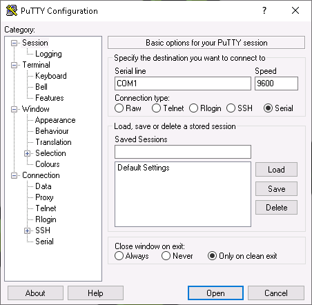
Рис. 4.1 Настройка последовательного порта в PuTTY¶
4.2.2 Запуск устройства¶
После того, как устройство полностью подключено, установлено подключение к устройству с помощью консольного кабеля и настроено терминальное приложение (PuTTY, экран или подобное), устройство можно запустить.
Устройство загружается, и через короткое время (в зависимости от конкретной модели) отобразится приглашение для входа в систему. Информация для входа по умолчанию:
Пользователь:
администраторПароль:
администратор
Примечание
При первой настройке этот пароль следует изменить (см. главу 6.2.1.1).
4.3 Настройка виртуального устройства¶
Примечание
Требования к установке прибора можно найти в главе 4.1.
4.3.1 Проверка правильности¶
Примечание
Целостность виртуального устройства можно проверить. По запросу служба поддержки «Ак Шумкар» предоставляет контрольную надежность.
Для запроса контрольной суммы обратитесь в Команда поддержки Ак Шумкар включая номер подписки.
Контрольную уверенность можно рассчитать по телефону или через поддержка портала.
Объем локальной проверки зависит от мощности системы хоста.
В комфортном Linux можно использовать эту команду для расчета контрольной суммы:
sha256сумма <файл>
Примечание
Заменить <файл> с именем файла OVA устройства.
В спокойном Microsoft Windows в Windows PowerShell можно использовать эту команду для расчета контрольной суммы:
Получить-Хеш файл 'C:\<путь>\<файл>' -Алгоритм SHA256
Примечание
Заменить <путь> и <файл> с помощью и имени файла OVA устройства.
Если контрольная сумма не соответствует контрольной сумме, предоставленной службой поддержки «Ак Шумкар», виртуальное устройство было модифицировано и его нельзя использовать.
4.3.2 Развертывание устройства¶
Если безопасная загрузка должна быть включена, по крайней мере, версия гипервизора, защищенная в подразделениях главы 4.1 необходимо использовать и настроить следующие настройки на соответствующем гипервизоре:
Гипервизор VMware vSphere (ESXi):
Семейство гостевых ОС должен быть установлен на Линукс.
Версия гостевой ОС должно быть установлено как минимум Debian GNU/Linux 11 (64-разрядная версия).
Рабочая станция VMware Pro:
Гостевая операционная система должен быть установлен на Линукс.
Версия гостевой системы освещения должно быть установлено как минимум Debian GNU/Linux 11 (64-разрядная версия).
Microsoft Hyper-V:
Виртуальная машина должна быть соответствует машине 2-го поколения.
Шаблон безопасной загрузки должен быть установлен на Центр сертификации Microsoft UEFI.
Oracle VirtualBox:
После первого включения безопасный Сбросить ключи по умолчанию необходимо нажать кнопку и продолжить следующий диалог.
Чтобы самостоятельно включить безопасную загрузку, обратитесь к технической документации используемого гипервизора.
4.3.2.1 VMware vSphere/ESXi¶
Виртуальное устройство используется компанией «Ак Шумкар» в формате Open Virtualization Appliance (OVA).
Каждое устройство активируется с помощью уникального переключателя подписки.
Примечание
Клонирование устройства и параллельное использование нескольких экземпляров без правил и правил может привести к несогласованности и нежелательным побочным результатам.
Чтобы развернуть устройство, его необходимо импортировать в выбранный гипервизор следующим образом:
Примечание
В данном случае используется VMware ESXi, но он также применим и для VMware vCenter.
На рисунках показана установка АК-ШУМКАР ТЕРА. Установка другой модели прибора. Имена файлов, используемые в программе, различаются в зависимости от модели устройства и переключателя подписки.
Откройте веб-интерфейс экземпляра VMware ESXi и войдите в систему.
Нажмите Виртуальные машины в Навигатор столбец слева.
Выбирать Развертывание устройства из файла OVF или OVA. и нажмите Следующий (видеть Рис. 4.2).
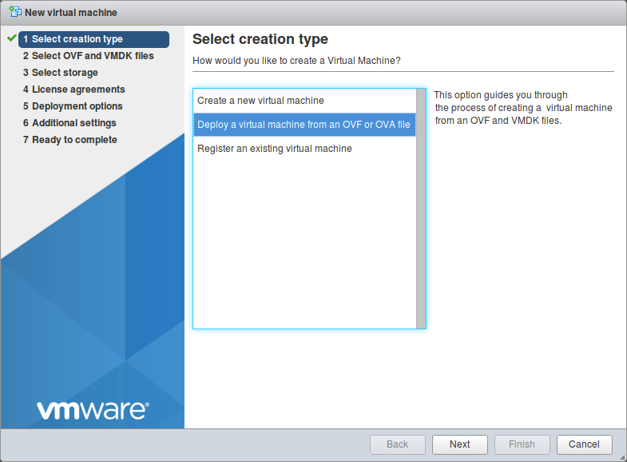
Рис. 4.2 Выбор типа создания¶
Введите имя результата машины в поле ввода.
Нажмите Нажмите, чтобы выбрать файлы или перетащите их., выберите файл OVA устройства и нажмите Следующий.
Выберите место хранения, в котором будут храниться файлы, и нажмите кнопку машины. Следующий.
Настройте параметры развертывания по мере необходимости и нажмите Следующий.
Примечание
Можно использовать настройки развертывания по умолчанию.
Проверьте конфигурацию состояния машины (см. Рис. 4.3).
Кончик
Настройки можно изменить, кнопки Назад и настраиваю их в соответствующем диалоге.
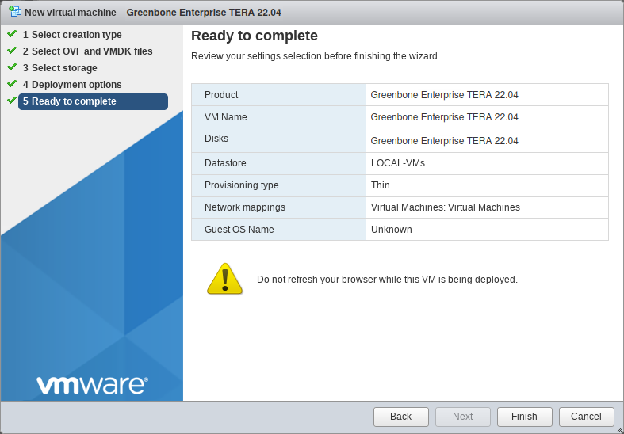
Рис. 4.3 Проверка конфигурации машины¶
Нажмите Заканчивать.
→ Прибор импортируется. Это может занять до 10 минут.
Важный
Не обновляйте браузер во время развертывания устройства.
После импорта устройства нажмите Виртуальные машины в Навигатор столбец слева.
Выберите устройство в списке и нажмите Включение питания (видеть Рис. 4.4).
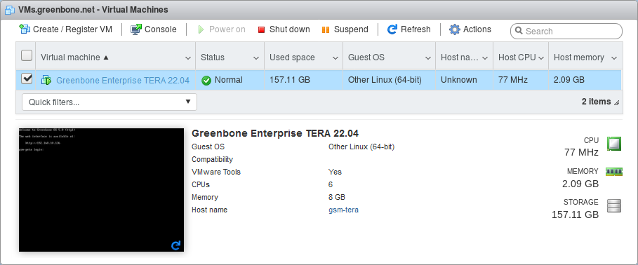
Рис. 4.4 Импортированная виртуальная машина¶
→ Устройство загружается, и через короткое время – в зависимости от конкретной модели – появляется приглашение для входа в систему.
Войдите в систему, используя данные для входа по умолчанию:
Пользователь:
администраторПароль:
администратор
Примечание
При первой настройке этот пароль следует изменить (см. главу 6.2.1.1).


4.3.2.2 Oracle VirtualBox¶
Виртуальное устройство используется компанией «Ак Шумкар» в формате Open Virtualization Appliance (OVA).
Каждое устройство активируется с помощью уникального переключателя подписки.
Примечание
Клонирование устройства и параллельное использование нескольких экземпляров без правил и правил может привести к несогласованности и нежелательным побочным результатам.
Чтобы развернуть устройство, его необходимо импортировать в выбранный гипервизор следующим образом:
Примечание
Имена файлов, используемые в программе, различаются в зависимости от переключателя подписки.
Установите Oracle VirtualBox для текущей системы.
Примечание
VirtualBox часто входит в состав дистрибутивов Linux.
Если это не так и используется версия Microsoft Windows, VirtualBox доступен по адресу https://www.virtualbox.org/wiki/Загрузки.
Запустите ВиртуалБокс.
Выбирать Файл > Импортировать устройство… в меню.
Нажмите и выберите файл устройства OVA (см. Рис. 4,5).
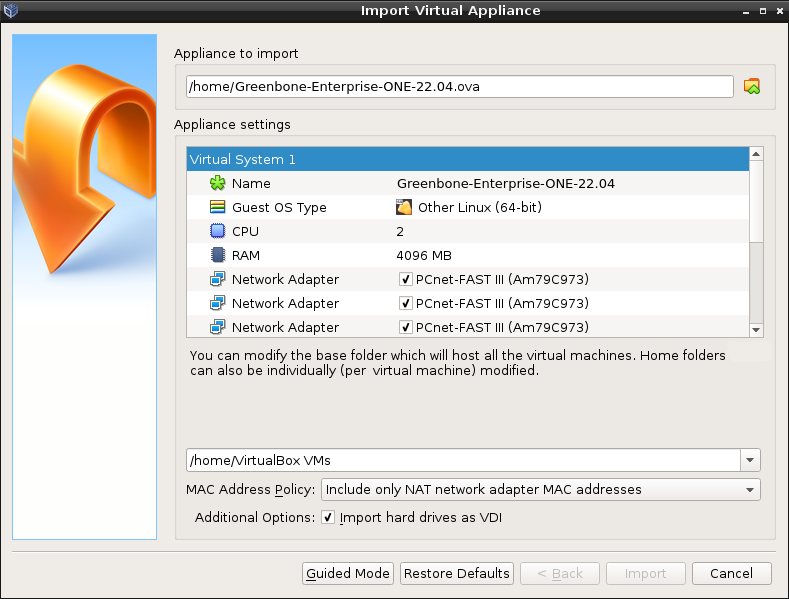
Рис. 4,5 Импорт файла OVA с устройства¶
Проверьте конфигурацию состояния машины в окне Настройки устройства (видеть Рис. 4,5).
Значения можно изменить, используя интеллектуальную мышь, в поле ввода обычных значений.
Нажмите Импорт.
→ Прибор импортируется. Это может занять до 10 минут.
Когда устройство импортировано, оно отображается в левом столбце VirtualBox.
Выберите устройство в списке и нажмите Начинать.
→ Устройство загружается, и через короткое время – в зависимости от конкретной модели – появляется приглашение для входа в систему.
Войдите в систему, используя данные для входа по умолчанию:
Пользователь:
администраторПароль:
администратор
Примечание
При первой настройке этот пароль следует изменить (см. главу 6.2.1.1).


4.3.2.3 Виртуальная среда Proxmox¶
Виртуальное устройство происходит с Ак Шумкаром в виде сжатой резервной копии Proxmox в формате Zstandard (ZST).
Каждое устройство активируется с помощью уникального переключателя подписки.
Примечание
Клонирование устройства и параллельное использование нескольких экземпляров без правил и правил может привести к несогласованности и нежелательным побочным результатам.
Чтобы развернуть устройство, его необходимо импортировать в выбранный гипервизор следующим образом:
Примечание
Имена файлов и папок, используемые в исходном коде, существуют в зависимости от конфигурации гипервизора и ключа подписки.
Скопируйте файл ZST в папку
/var/lib/vz/дамп/каталог экземпляра окружающей среды Proxmox.Откройте веб-интерфейс экземпляра современной среды Proxmox и войдите в систему.
Нажмите Центр обработки данных в столбце слева и выберите соответствующий узел и стойку.
Примечание
Резервное копирование должно быть включено для хранения устройства, которое следует использовать.
Нажмите Резервные копии в столбце посередине (см. Рис. 4.6).
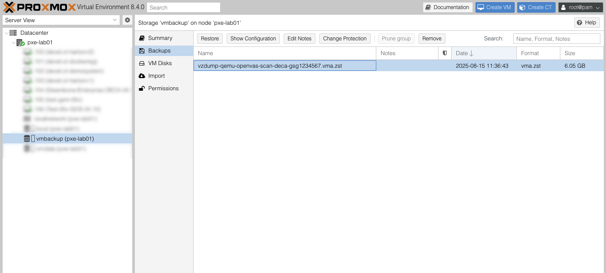
Рис. 4.6 Выбор ZST-файла¶
Выберите файл ZST, скопированный на шаге 1, и нажмите Восстановить.
Проверьте конфигурацию состояния машины в окне Восстановление: ВМ (видеть Рис. 4.7).
Значения можно изменить, используя интеллектуальную мышь, в поле ввода обычных значений.
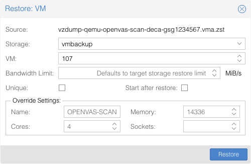
Рис. 4.7 Проверка конфигурации машины¶
Нажмите Восстановить.
→ Прибор импортируется. Это может занять до 10 минут.
Выберите устройство в столбце слева и нажмите Начинать.
→ Устройство загружается, и через короткое время – в зависимости от конкретной модели – появляется приглашение для входа в систему.
Войдите в систему, используя данные для входа по умолчанию:
Пользователь:
администраторПароль:
администратор
Примечание
При первой настройке этот пароль следует изменить (см. главу 6.2.1.1).


4.4 Выполнение общей настройки системы¶
Все устройства имеют одинаковый способ определения и проверки подлинности.
При доставке устройства компанией «Ак Шумкар» или сбросе настроек системы к заводским настройкам меню в администрировании ГСН, после входа в систему отображается первый мастер настроек, помогающий настроить базовую настройку ГСН (см. Рис. 4,8).
Выбрав Да и работа Входить откроется первая мастер-настройка.
Выбрав Нет и работа Входить, мастер настроек закроется. Незавершенные шаги еще раз при следующем входе в систему.
Выбрав Отмена и работа Входить, мастер настроек также закроется. Однако неполные шаги нет отображается снова.

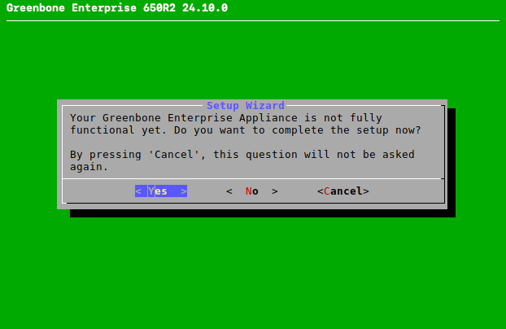
Рис. 4,8 Использование мастера первой настройки¶
Примечание
Первый мастер настройки представляет собой движение и показывает только те шаги, которые необходимы для работы с используемой моделью устройства. Далее упоминаются все возможные шаги, но они могут появляться не в каждом случае.
В случае возврата к заводским настройкам необходимо выполнить настройку всех действий (см. 19.10).
Каждый шаг можно пропустить, выбрав Пропуск или Нет и работа Входить. Пропущенные шаги далее при повторном входе в систему.
4.4.1 Настройка сети¶
Сеть должна быть настроена для полноценной работы устройства. Если IP-адрес не настроен, возникает вопрос, следует изменить настройки сети (см. Рис. 4,9).
Примечание
При использовании DHCP-устройства используется не MAC-адрес, а уникальный идентификатор DHCP (DUID). Хотя это не должно создавать проблем для современных DHCP-серверов, некоторые старые DHCP-серверы (например, Windows Server 2012) могут не оставаться на этой стороне.
Одним из возможных решений является указание DUID вместо MAC-адреса на DHCP-сервере. Альтернативно на устройстве можно использовать статический IP-адрес.

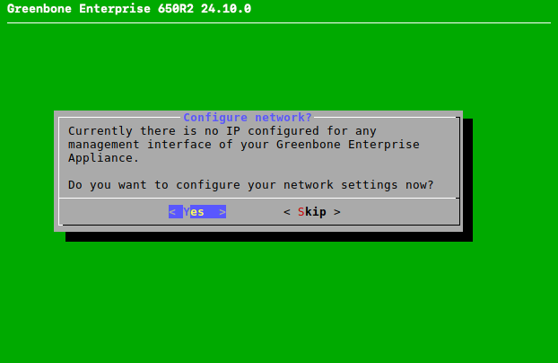
Рис. 4,9 Настройка параметров сети¶
Выбирать Да и нажмите Входить.
Выбирать Интерфейсы и нажмите Входить.
Выберите нужный интерфейс и нажмите Входить.
→ Интерфейс можно настроить.
Если необходимо использовать DHCP, выберите DHCP (для IPv4 или IPv6) и нажмите Входить (видеть Рис. 4.10).
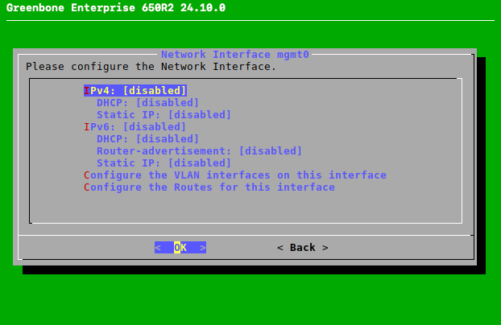
Рис. 4.10 Настройка сетевого интерфейса¶
Выбирать Сохранять и нажмите Входить.
Выбирать Назад и нажмите Входить.
Выбирать Назад и нажмите Входить.
Выбирать Готовый и нажмите Входить.
или

Если необходимо использовать статический IP-адрес, выберите Статический IP (для IPv4 или IPv6) и нажмите Входить.
Введите IP-адрес, видя префикс, в поле ввода (см. Рис. 4.11).
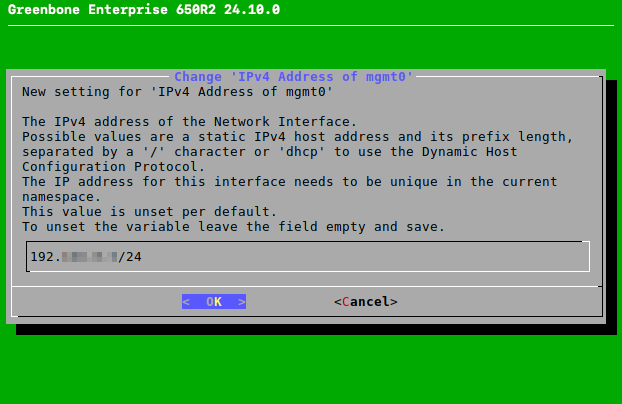
Рис. 4.11 Ввод статического IP-адреса¶
Нажимать Входить.
→ Сообщение информирует о том, что изменения необходимо сохранить.
Нажимать Входить чтобы закрыть сообщение.
Выбирать Сохранять и нажмите Входить.
Выбирать Назад и нажмите Входить.
Выбирать Назад и нажмите Входить.
Выбирать Готовый и нажмите Входить.

4.4.2 Импорт или создание сертификата HTTPS¶
Для безопасного использования веб-интерфейса рекомендуется использовать сертификат HTTPS. Сертификат можно импортировать или создать следующим образом:
Выбирать Импорт и нажмите Входить (видеть Рис. 4.12).
→ Сообщение информирует о том, что файл PKCS#12 можно импортировать.
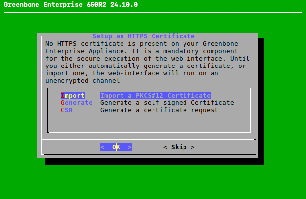
Рис. 4.12 Импорт или создание сертификата HTTPS¶
Выбирать Продолжать и нажмите Входить.
Откройте веб-браузер и введите отображаемый URL-адрес.
Нажмите Просмотреть…, выберите файл PKCS#12 и нажмите Загрузить.
→ Когда устройство получает сертификат, в меню администрирования ГОС отображается отпечаток сертификата для проверки.
Проверьте отпечаток пальца и подтвердите сертификат, нажав кнопку Входить.
или

Выбирать Генерировать и нажмите Входить.
→ Сообщение информирует о том, что для создания сертификата необходимо ввести параметры.
Выбирать Продолжать и нажмите Входить.
Укажите настройку сертификата (см. Рис. 4.13).
Примечание
Допустимо создание сертификата без общего имени. Однако сертификат не следует создавать без альтернативного имени(а) субъекта.
Если используется общее имя, оно должно соответствовать имени одной из сетей SAN.
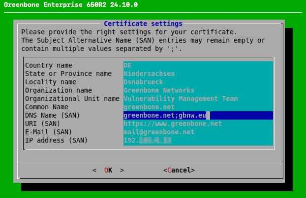
Рис. 4.13 Внесение данных для сертификата¶
Выбирать ХОРОШО и нажмите Входить.
→ Сообщение информирует о том, что сертификат создан и его можно загрузить (см. Рис. 4.14).
Примечание
Загрузка осуществляется не в первом мастере настроек, а в последующем меню администрирования ГСН, как указано в главе. 6.2.4.1.7.1, шаги 1–4 и 9–13.
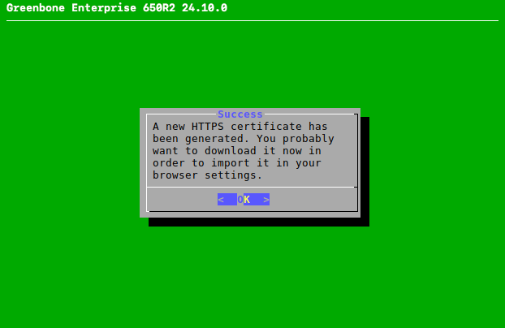
Рис. 4.14 Заполнение сертификата HTTPS¶
или


Выбирать КСО и нажмите Входить.
→ Сообщение информирует о том, что пара ключей и запрос сертификата изготовлены.
Выбирать Продолжать и нажмите Входить.
Укажите настройку сертификата.
Примечание
Допустимо создание сертификата без общего имени. Однако сертификат не следует создавать без альтернативного имени(а) субъекта.
Если используется общее имя, оно должно соответствовать имени одной из сетей SAN.
Выбирать ХОРОШО и нажмите Входить.
Откройте веб-браузер и введите отображаемый URL-адрес.
Загрузите PEM-файл.
→ В меню администрирования GOS отображается сообщение для проверки того, что CSR не было изменено.
проверить информацию, нажать кнопку Входить.
Примечание
После подписания сертификата его необходимо загрузить на устройство. Загрузка осуществляется не в первом мастере настроек, а в последующем меню администрирования ГСН, как указано в главе. 6.2.4.1.7.2, шаги 1–4 и 11–14.
4.4.3 Создание веб-администратора¶
Если веб-администратора нет, возникает вопрос, следует ли создать такую учетную запись (см. Рис. 4.15).

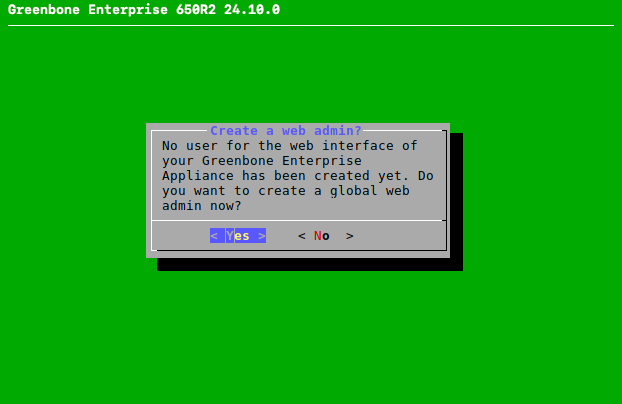
Рис. 4.15 Создание веб-администратора¶
Примечание
Для использования веб-интерфейса устройства требуется веб-администратор.
Первый созданный веб-администратор (веб-пользователь) автоматически получает доход от импорта каналов (см. главу). 6.2.1.10).
Выбирать Да и нажмите Входить.
Введите имя пользователя веб-администратора.
Примечание
В имени пользователя разрешены только следующие символы:
Все буквенно-цифровые символы
- (бросаться)
_ (подчеркивание)
. (точка)
Дважды введите пароль веб-администратора.
Примечание
Пароль может содержать символы любого типа и иметь размер не более 64 символов.
При использовании специальных символов помните, что они должны быть доступны на всех внешних клавиатурах и правильно поддерживаться всеми клиентскими программами и операционными цепями. Копирование и установка специальных символов для паролей может привести к недействительным паролям в зависимости от этих факторов.
Выбирать ХОРОШО и нажмите Входить.
→ Сообщение информирует о том, что веб-администратор создан.
Нажимать Входить чтобы закрыть сообщение.
4.4.4 Ввод или загрузка ключа подписки AK-SHUMKAR ENTERPRISE FEED¶
Если на устройстве не сохраняется действительный ключ подписки, устройство использует только общедоступный канал AK-SHUMKAR COMMUNITY FEED, а не AK-SHUMKAR ENTERPRISE FEED.
Примечание
Нет необходимости использовать ключ подписки AK-SHUMKAR ENTERPRISE FEED на вновь доставленное устройство, поскольку ключ уже установлен заранее.
В качестве исключения модель АК-ШУМКАР БЕЙСИК не включается с предустановленным ключом подписки и не может использоваться с АК-ШУМКАР СООБЩЕСТВЕННОЙ ЛЕНТОЙ.
Ключ регистрации можно ввести или загрузить следующим образом:
Выбирать Редактор и нажмите Входить (видеть Рис. 4.16).
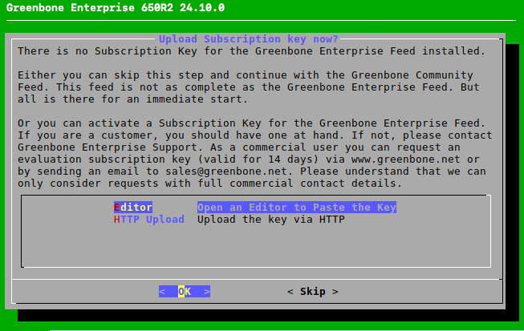
Рис. 4.16 Ввод или загрузка переключателя подписки¶
→ Редактор открыт.
Используйте специальные переключатели подписки.
Примечание
Важно вводить критерии ключа, а не имя ключа (например,
gsf2022122017).Содержимое ключа можно отобразить в любом текстовом редакторе или под Linux с помощью программы
меньше. Если контент открыт в текстовом редакторе, необходимо позаботиться о том, чтобы ничего не изменить.Нажимать Ctrl + С чтобы сохранить изменения.
Нажимать Ctrl + Х закрыть редактор.
или

Выбирать HTTP-загрузка и нажмите Входить.
Откройте веб-браузер и введите отображаемый URL-адрес.
Нажмите Просмотреть…, выберите ключ подписки и нажмите Загрузить.
4.4.5 Загрузка канала¶
Если на устройстве нет канала, его можно загрузить следующим образом:
Выбирать Да и нажмите Входить (видеть Рис. 4.17).
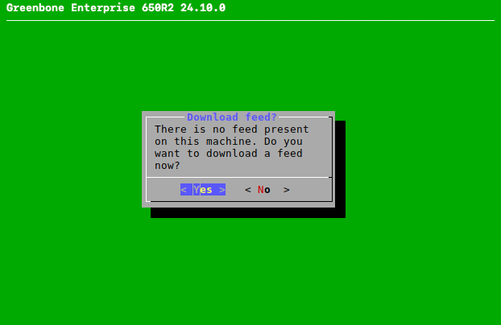
Рис. 4.17 Загрузка канала¶
→ Сообщение информирует о том, что обновление ленты было запущено в фоновом режиме (см. Рис. 4.18).
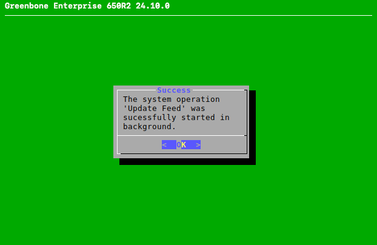
Рис. 4.18 Загрузка канала¶
Нажимать Входить чтобы закрыть сообщение.


4.4.6 Завершение работы мастера первой настройки¶
Примечание
После последнего этапа проверки качества.
После завершения проверки нажмите Входить.
→ Ображаются результаты проверки (см. Рис. 4.19).
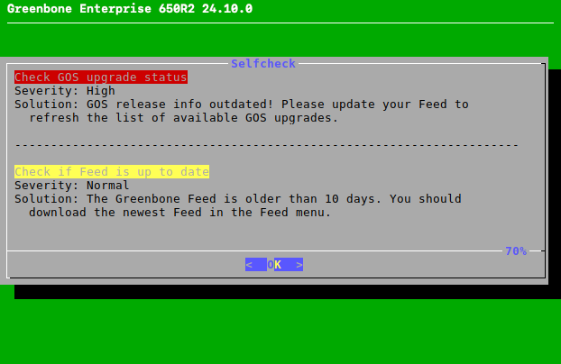
Рис. 4.19 Результат проверки¶
Нажимать Входить.
→ Меню администрирования ГСН можно использовать, как указано в главе 6.
Если есть незавершенные или пропущенные шаги, при повторном входе в систему отображается первая мастер-настройка.

4.5 Вход в веб-интерфейс¶
Примечание
Этот шаг не касается АК-ШУМКАР 35 и АК-ШУМКАР 25В.
Основным интерфейсом устройства является веб-интерфейс, также называемый «Ак Шумкар Security Assistant» (GSA). Доступ к веб-интерфейсу можно получить, как указано в главе. 7.1.